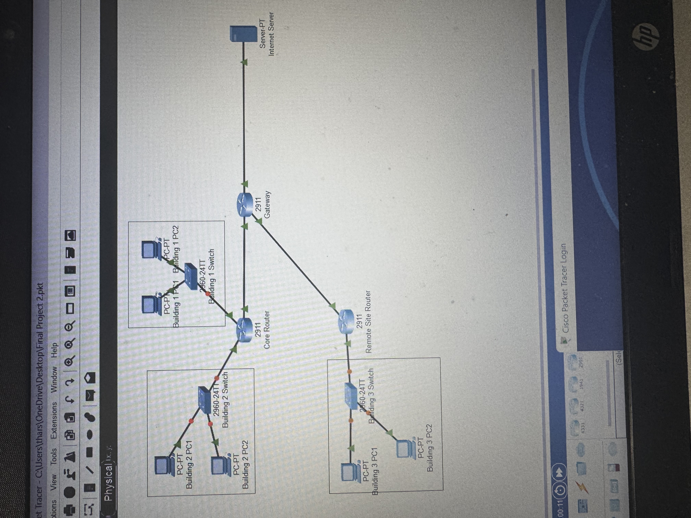

Intro to Networking 2 project
The purpose of the final project for Intro to Networking 2 was to give configurations to each of the different devices, which includes each of the PCS for the 3 buildings, the 3 switches for each building, the router, the Remote Site router, gateway, and finally the internet server. Than, we needed to connect each of the devices to their spot according to the Topology. Finally, we needed to troubleshoot to make sure everything was correct.
